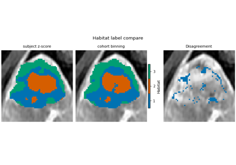
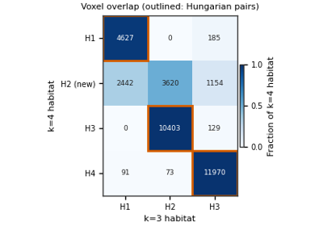

Habitat Guide
Background. A habitat is a sub-region inside the tumour (the ROI) whose voxels behave alike across the input images. Habitat analysis paints every ROI voxel with a habitat id, then turns the habitat map into numbers (volume, spatial mixing, heterogeneity, radiomics) that can enter statistics or a model.
Purpose. Start with the complete analysis, then open one stage at a
time. Copy the Python, swap DATA / MODALITIES / ROI. Figures
on a page come from that page’s plot_* call.
0. Complete analysis — one two-step study, from images to habitat maps, a feature table and a saved model.
1. Data In — build the cohort from a folder, image files, SimpleITK images or NumPy arrays.
2. Each stage — what extract, preprocess, partition, fit and assign each do, one page per option.
3. Habitat Quantification — turn a habitat map into volume, MSI, ITH, graph and radiomics features.
4. Three habitat designs — two-step, clustering inside each subject, or pooling voxels directly.
5. Apply a saved model — label new patients with a saved
.habitatmodelwithout fitting again.6. Matching Habitat Labels — make habitat ids comparable when they come from separate fits.
7. Running a whole cohort — backends, failed subjects, checkpoint resume, timeouts, and when parallel is worth it.
8. Precise Feature Screening — keep only features that stay repeatable under simulated retest.
Every example loads the official pack with
fetch_demo() (downloads once). CLI / YAML:
Quickstart: run the demo (YAML + CLI) and CLI and YAML.
0. Complete analysis
Read this page first. It is one two-step study from images to a feature
table and a saved model. Later sections open the same
HabitatSpec one stage at a time.
1. Data In
Background. Every habitat analysis starts by telling HABIT which images
and which tumour mask belong to which patient. Purpose. Each page turns
files or arrays you already have into a Cohort;
terms are defined on Load from directory.
The complete analysis
starts from a Cohort. Every route on this
section ends in one. Each page shows
two assemblies: Cohort([one_subject]) and Cohort([several_subjects]).
Pass that cohort to fit / fit_predict. A Python list is not a cohort.
Pick the page that matches the files you already have.
HABIT directory —
images/<subject>/<series>/<one file>andmasks/<subject>/<roi>/<one file>. One series or several. The mask folder name can differ from the series name. Load from directory.Loose NIfTI, NRRD, or MetaImage — one pair or many. You choose the series name and the ROI name. Image and mask grids may differ. Load from NIfTI files.
SimpleITK images already in memory — Load from SimpleITK.
NumPy arrays or deep-learning tensors — axis order
(z, y, x), integer mask,0= background. Load from NumPy arrays.
DICOM, and series that still need resampling or bias correction, are not a load route. Preprocess them first (Preprocessing), then use the directory page. The official demo pack is already preprocessed.
read_image / read_mask accept what SimpleITK reads
(.nii, .nii.gz, .nrrd, .mha, .mhd).


2. Each stage
Background. A two-step habitat analysis is a chain of stages: extract voxel features, preprocess them, partition each tumour into supervoxels, pool the cohort, fit one habitat model, assign labels.
Purpose. Each page runs one stage on demo data so you can see its input, its output, and the parameters that matter.
These pages open the stage list of the
complete analysis.
Stage’s first argument is a label. Spec names the component.
extract — Extracting voxel intensities, Voxel features, Expression voxel features, Custom features, Voxel texture and GPU, Extracting a voxel texture, Clustering habitats from a derived map, Clustering habitats from a texture field.
preprocess — Feature preprocessing, Preprocessing features before clustering, Comparing habitat maps with and without preprocessing, Preprocessing voxel texture before clustering.
partition — Partitioning a ROI into supervoxels, Supervoxel feature extraction and acceleration.
assign — Assigning habitat labels.



Preprocessing voxel texture before clustering


Comparing habitat maps with and without preprocessing


3. Habitat Quantification
Background. A habitat map is a picture; statistics and prediction models need numbers. Purpose. Each page turns one subject’s habitat map into a row of features (sizes, spatial mixing, fragmentation, network shape, radiomics, embeddings) that you can join to outcomes downstream.
These metrics are the quantify stages of the complete analysis (volume, MSI, ITH, graph). Each page refits a small cohort so it can be copied on its own, then computes one family from the label map.
Quantify habitats with atomic functions: volume and fractions, multiregional spatial interaction (MSI, Wu et al. 2018), intratumoral heterogeneity (ITH), graph topology networks, per-habitat radiomics, whole-habitat radiomics, and deep-learning masked embeddings.


4. Three habitat designs
Background. A habitat design decides which rows are clustered and whether one model is shared by the whole cohort or fitted per subject. Purpose. Run the same data through each design and see what changes: shared vs. per-subject habitat ids, supervoxels vs. voxels.
The complete analysis is two-step: partition, then pool, then
fit. These pages change that stage list and nothing else.
Design |
|
|
|
|---|---|---|---|
two-step |
yes |
yes |
supervoxels, cohort |
inside each subject |
no |
no |
voxels, one subject |
pooling voxels |
no |
yes |
voxels, cohort |
two_step_habitat, one_step_habitat and direct_pooling_habitat
build those lists. Habitat ids match across subjects only when fit
ran once on the cohort. Otherwise match labels first
(6. Matching Habitat Labels).
Two steps — Defining habitats in two steps.
Inside each subject — Defining habitats inside each subject.
Pooling voxels — Pooling voxels across the cohort.
Applying a saved model is the next section. Opening each stage is 2. Each stage.


5. Apply a saved model
Background. A fitted habitat model can be saved and reused, so later or external subjects get the same habitat ids as the training cohort. Purpose. Save the model once, reload it, and label new subjects with the training centroids without refitting.
Train the habitat definition, write a .habitatmodel file, and label
later subjects without fitting again.
Applying a saved habitat model

6. Matching Habitat Labels
Background. A clustering run numbers its habitats in arbitrary order, so the same tissue can be habitat 1 in one run or patient and habitat 3 in another (label switching). Purpose. These pages show how HABIT matches the ids so that Dice, volume fractions and cohort tables compare like with like.
Calling it on a fitted study: Matching habitat labels across subjects. The pages below show why ids switch and how each matcher works.
Habitat ids from independent clusterings are arbitrary: habitat 1 of one fit can be habitat 3 of another. Anything that compares habitats by id (Dice, volume fractions, a cohort feature table) must match the ids first. HABIT has two matchers, chosen by what the two sides share:
Voxel overlap – the maps label the same voxels (a restart, another
k, another feature set, a perturbed image, a second reader). Hungarian assignment on the voxel-overlap table.align_habitat_map(),habitat_stability().Shared prototypes – the maps label different subjects. Each subject’s habitat summaries are matched one-to-one onto
Kshared prototypes, iterated until stable; prototypes can be frozen to name a new cohort.align_habitat_maps_to_prototypes().
A shared cohort model (two-step, direct pooling, an applied saved model) already uses one id space and needs neither. Formulas, proofs, and literature: Matching habitat labels across fits and subjects.

Matching maps of the same voxels by overlap


7. Running a whole cohort
Background. A real study has tens to hundreds of subjects. Running them is a scheduling question, not a scientific one: the backend and run policy change speed and failure handling, never the habitat labels.
Purpose. Run the same study on the serial and process backends and
check the labels match; see what happens when one subject fails
(on_subject_failure), resume from checkpoints, set a per-subject
timeout, cap workers to the GPUs, and learn when parallel is actually
worth it (on a tiny cohort serial can be faster because Windows spawn
start-up dominates).
Running the same study on each backend
8. Precise Feature Screening
Background. Some voxel features change a lot when the same tumour is rescanned or computed with slightly different settings; habitats built on them are unstable. Purpose. Keep only features that agree under a simulated retest and across settings (measured by ICC), then check whether habitats built on them are more stable on this demo.
Repeatability and reproducibility screening (Prior et al., 2024): simulated image retest perturbation (noise, translation, rotation) and ROI contour edge perturbation, evaluated across kernel radii and bin widths with multi-panel ICC forest plots.
The main gallery page also clusters habitats on the same subject with and without the precise whitelist under the Appendix S2 retest: without precise, original and perturbed habitat maps disagree; with precise, mean Dice rises and labelled-voxel disagreement falls on this demo (modestly).